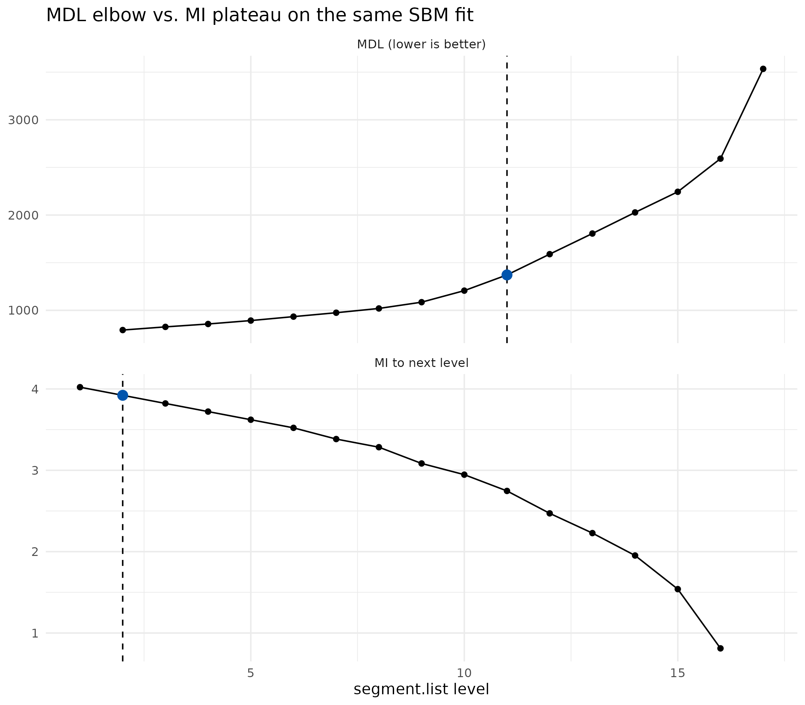

Auto Level Selection with auto_segment_levels()
Source:vignettes/monecascale-auto-level.Rmd
monecascale-auto-level.Rmd1. Introduction
auto_segment_levels() closes a recurring loose end in
hierarchical segmentation: the backend returns a full nested hierarchy,
but downstream analysis typically needs a single level. Picking that
level by hand is brittle, does not scale, and is difficult to justify in
a reproducible pipeline.
The function implements two principled, purely post-hoc criteria for picking a preferred level from a fitted hierarchy. It composes directly with the two scalable backends in this package:
-
moneca_sbm()(direction D2) - hierarchical DC-SBM on square mobility. -
moneca_bipartite()(direction D1) - hierarchical DC-LBM on rectangular mobility, picked independently on the row and column sides.
Plain moneca::moneca_fast() output is not yet supported
and is rejected with an informative error; that hook is deferred to
monecascale 0.3.1.
Two entry points exist. The function itself takes a fitted object and
returns the pick plus per-level diagnostics. The
segment.levels = "auto" argument on
moneca_sbm() and moneca_bipartite() is the
wrapper sugar: fit the full hierarchy, pick a level, and trim the
returned object to that level in one call.
2. Criteria
MDL elbow. The criterion walks the per-level Minimum
Description Length (MDL) series (coarse to fine) and picks the point of
maximum perpendicular distance from the chord connecting the two
endpoints. This is the Kneedle heuristic (Satopaa et al. 2011) and is
the default. An alternative mdl_elbow = "max_second_diff"
selects the discrete second-difference peak, which is more sensitive on
short hierarchies but noisier on long ones. On moneca_sbm()
the MDL series is -ICL from greed::DcSbm; on
moneca_bipartite() the per-side series is
-joint_icl from greed::DcLbm, sliced to the
side at hand. In both cases lower is better, so Kneedle detects the knee
of a decreasing curve.
MI plateau. The criterion computes level-to-level
mutual information I(m_l, m_{l+1}) between adjacent
hierarchy levels directly from segment.list, independently
of backend diagnostics. I(m_l, m_{l+1}) measures how much
structure level l+1 shares with the coarser level
l: it is high when refinement is consistent with what was
there at the coarser level and drops where refinement begins to
reshuffle memberships. The plateau is the first level whose gain
I_l - I_{l-1} falls below plateau_tol * max(I)
- the resolution at which further refinement adds little and is
therefore heuristically redundant. If no plateau is detected the finest
level is returned.
The two criteria use different inputs (MDL series vs. membership vectors), so they can and often do disagree. That disagreement is itself diagnostic, as illustrated in section 6.
3. Quick start on SBM
The quickest way to see the function at work is on a synthetic mobility fixture small enough to build in a vignette. We keep the fixture inline rather than sourcing the test helpers.
library(monecascale)
# 1. synthetic fixture -----
mob <- moneca::generate_mobility_data(
n_classes = 20,
n_total = 5000,
immobility_strength = 0.5,
class_clustering = 0.75,
noise_level = 0.05,
seed = 2026
)
# 2. full hierarchy fit -----
fit <- monecascale::moneca_sbm(mob, backend = "greed", seed = 2026)
# 3. pick a level post-hoc -----
res <- monecascale::auto_segment_levels(fit, method = "mdl")
res
#> <auto_segment_levels> method=mdl backend=sbm picked level=11 of 16
#> level n_blocks mdl mi_to_next score
#> 2 17 793.0154 NA 793.0154
#> 3 16 826.1811 NA 826.1811
#> 4 15 856.5932 NA 856.5932
#> 5 14 892.5546 NA 892.5546
#> 6 13 933.7947 NA 933.7947
#> 7 12 974.8118 NA 974.8118
#> 8 11 1019.7153 NA 1019.7153
#> 9 10 1085.4879 NA 1085.4879
#> 10 9 1206.5826 NA 1206.5826
#> 11 8 1371.6359 NA 1371.6359
#> 12 7 1589.5938 NA 1589.5938
#> 13 6 1806.0638 NA 1806.0638
#> 14 5 2027.6486 NA 2027.6486
#> 15 4 2244.2453 NA 2244.2453
#> 16 3 2592.2005 NA 2592.2005
#> 17 2 3534.6014 NA 3534.6014The printed header exposes method, backend, picked level, and the total number of levels available. The diagnostics table holds the full per-level trace used to make the pick, which is useful both as an audit record and for plotting the criterion curve.
res$diagnostics
#> level n_blocks mdl mi_to_next score
#> 1 2 17 793.0154 NA 793.0154
#> 2 3 16 826.1811 NA 826.1811
#> 3 4 15 856.5932 NA 856.5932
#> 4 5 14 892.5546 NA 892.5546
#> 5 6 13 933.7947 NA 933.7947
#> 6 7 12 974.8118 NA 974.8118
#> 7 8 11 1019.7153 NA 1019.7153
#> 8 9 10 1085.4879 NA 1085.4879
#> 9 10 9 1206.5826 NA 1206.5826
#> 10 11 8 1371.6359 NA 1371.6359
#> 11 12 7 1589.5938 NA 1589.5938
#> 12 13 6 1806.0638 NA 1806.0638
#> 13 14 5 2027.6486 NA 2027.6486
#> 14 15 4 2244.2453 NA 2244.2453
#> 15 16 3 2592.2005 NA 2592.2005
#> 16 17 2 3534.6014 NA 3534.6014Switching criterion is a one-argument change:
res_mi <- monecascale::auto_segment_levels(fit, method = "mi_plateau")
res_mi
#> <auto_segment_levels> method=mi_plateau backend=sbm picked level=2 of 17
#> level n_blocks mdl mi_to_next score
#> 1 20 NA 4.0219281 4.0219281
#> 2 17 NA 3.9219281 3.9219281
#> 3 16 NA 3.8219281 3.8219281
#> 4 15 NA 3.7219281 3.7219281
#> 5 14 NA 3.6219281 3.6219281
#> 6 13 NA 3.5219281 3.5219281
#> 7 12 NA 3.3841837 3.3841837
#> 8 11 NA 3.2841837 3.2841837
#> 9 10 NA 3.0841837 3.0841837
#> 10 9 NA 2.9464393 2.9464393
#> 11 8 NA 2.7464393 2.7464393
#> 12 7 NA 2.4709506 2.4709506
#> 13 6 NA 2.2282129 2.2282129
#> 14 5 NA 1.9527242 1.9527242
#> 15 4 NA 1.5394911 1.5394911
#> 16 3 NA 0.8112781 0.8112781
#> 17 2 NA NA NAmethod = "mi_plateau" ignores mdl_per_level
and operates directly on the cliques stored in
segment.list, so it works unchanged on any hierarchy
produced by this package.
4. Wrapper sugar: segment.levels = “auto”
moneca_sbm() and moneca_bipartite() accept
segment.levels = "auto". The wrapper fits the full
hierarchy, delegates to auto_segment_levels(), and trims
the returned object down to the picked level. The picker result is
attached so callers can still inspect what happened.
fit_auto <- monecascale::moneca_sbm(
mob,
backend = "greed",
seed = 2026,
segment.levels = "auto",
auto_method = "mdl"
)
# The full-hierarchy fit would have returned length(segment.list) levels;
# after trimming we see only those up to the pick.
length(fit_auto$segment.list)
#> [1] 11
# The picker result is retained for auditability.
fit_auto$auto_level
#> <auto_segment_levels> method=mdl backend=sbm picked level=11 of 16
#> level n_blocks mdl mi_to_next score
#> 2 17 793.0154 NA 793.0154
#> 3 16 826.1811 NA 826.1811
#> 4 15 856.5932 NA 856.5932
#> 5 14 892.5546 NA 892.5546
#> 6 13 933.7947 NA 933.7947
#> 7 12 974.8118 NA 974.8118
#> 8 11 1019.7153 NA 1019.7153
#> 9 10 1085.4879 NA 1085.4879
#> 10 9 1206.5826 NA 1206.5826
#> 11 8 1371.6359 NA 1371.6359
#> 12 7 1589.5938 NA 1589.5938
#> 13 6 1806.0638 NA 1806.0638
#> 14 5 2027.6486 NA 2027.6486
#> 15 4 2244.2453 NA 2244.2453
#> 16 3 2592.2005 NA 2592.2005
#> 17 2 3534.6014 NA 3534.6014
# The object is otherwise a plain moneca-class object.
class(fit_auto)
#> [1] "moneca"The trimmed object is a regular moneca-class object: the
moneca::segment.*() and
moneca::plot_moneca_*() APIs run on it unchanged.
auto_method = "mi_plateau" is accepted symmetrically and
dispatches to the MI criterion inside the wrapper.
5. Bipartite
On a bipartite fit the two sides are clustered jointly but exposed
through two one-mode projections. auto_segment_levels()
recurses into $rows and $cols, runs the
criterion independently on each side, and returns a named list. The two
sides may land on different levels.
# 1. rectangular fixture with planted row / column blocks -----
set.seed(2026)
n_row <- 60
n_col <- 40
row_block <- rep(seq_len(4), length.out = n_row)
col_block <- rep(seq_len(3), length.out = n_col)
lambda <- outer(row_block, col_block, function(g, h) {
ifelse((g - 1) %% 3 + 1 == h, 6, 1)
})
mx <- matrix(stats::rpois(n_row * n_col, lambda = lambda), n_row, n_col)
rownames(mx) <- paste0("R", seq_len(n_row))
colnames(mx) <- paste0("C", seq_len(n_col))
# 2. full bipartite fit -----
bip_fit <- monecascale::moneca_bipartite(mx, seed = 2026, verbose = FALSE)
bip_res <- monecascale::auto_segment_levels(bip_fit, method = "mdl")
# Two independent picks, one per side.
names(bip_res)
#> [1] "rows" "cols"
bip_res$rows
#> <auto_segment_levels> method=mdl backend=bipartite_rows picked level=3 of 4
#> level n_blocks mdl mi_to_next score
#> 2 3 62529.90 NA 62529.90
#> 3 2 63607.83 NA 63607.83
#> 4 2 63588.51 NA 63588.51
#> 5 1 64976.75 NA 64976.75
bip_res$cols
#> <auto_segment_levels> method=mdl backend=bipartite_cols picked level=5 of 4
#> level n_blocks mdl mi_to_next score
#> 2 3 62529.90 NA 62529.90
#> 3 3 63607.83 NA 63607.83
#> 4 2 63588.51 NA 63588.51
#> 5 2 64976.75 NA 64976.75The wrapper form behaves the same way as on SBM, except that the trimming is applied per side:
bip_auto <- monecascale::moneca_bipartite(
mx,
seed = 2026,
verbose = FALSE,
segment.levels = "auto",
auto_method = "mdl"
)
# Per-side picks; the two sides may disagree.
bip_auto$rows$auto_level$level
#> [1] 3
bip_auto$cols$auto_level$level
#> [1] 5
length(bip_auto$rows$segment.list)
#> [1] 3
length(bip_auto$cols$segment.list)
#> [1] 56. Criterion comparison
MDL elbow and MI plateau see different signals: the first operates on a backend goodness-of-fit trace, the second on the memberships the hierarchy actually delivered. On the same fit we can run both and inspect the two curves side by side.
res_mdl <- monecascale::auto_segment_levels(fit, method = "mdl")
res_mi <- monecascale::auto_segment_levels(fit, method = "mi_plateau")
# Picks
c(mdl = res_mdl$level, mi_plateau = res_mi$level)
#> mdl mi_plateau
#> 11 2The diagnostics tables carry the series each criterion used.
res_mdl$diagnostics[, c("level", "n_blocks", "mdl")]
#> level n_blocks mdl
#> 1 2 17 793.0154
#> 2 3 16 826.1811
#> 3 4 15 856.5932
#> 4 5 14 892.5546
#> 5 6 13 933.7947
#> 6 7 12 974.8118
#> 7 8 11 1019.7153
#> 8 9 10 1085.4879
#> 9 10 9 1206.5826
#> 10 11 8 1371.6359
#> 11 12 7 1589.5938
#> 12 13 6 1806.0638
#> 13 14 5 2027.6486
#> 14 15 4 2244.2453
#> 15 16 3 2592.2005
#> 16 17 2 3534.6014
res_mi$diagnostics[, c("level", "n_blocks", "mi_to_next")]
#> level n_blocks mi_to_next
#> 1 1 20 4.0219281
#> 2 2 17 3.9219281
#> 3 3 16 3.8219281
#> 4 4 15 3.7219281
#> 5 5 14 3.6219281
#> 6 6 13 3.5219281
#> 7 7 12 3.3841837
#> 8 8 11 3.2841837
#> 9 9 10 3.0841837
#> 10 10 9 2.9464393
#> 11 11 8 2.7464393
#> 12 12 7 2.4709506
#> 13 13 6 2.2282129
#> 14 14 5 1.9527242
#> 15 15 4 1.5394911
#> 16 16 3 0.8112781
#> 17 17 2 NAIf ggplot2 is available we can plot the two curves with
the picks annotated. Otherwise the tables above are the portable
summary.
# 1. prepare panels -----
mdl_df <- res_mdl$diagnostics
mdl_df$criterion <- "MDL (lower is better)"
mdl_df$value <- mdl_df$mdl
mi_df <- res_mi$diagnostics
mi_df$criterion <- "MI to next level"
mi_df$value <- mi_df$mi_to_next
plot_df <- rbind(
mdl_df[, c("level", "n_blocks", "value", "criterion")],
mi_df[, c("level", "n_blocks", "value", "criterion")]
)
plot_df <- plot_df[is.finite(plot_df$value), ]
# 2. pick annotations -----
picks <- data.frame(
criterion = c("MDL (lower is better)", "MI to next level"),
level = c(res_mdl$level, res_mi$level)
)
picks$value <- mapply(
function(cr, lvl) {
sub <- plot_df[plot_df$criterion == cr & plot_df$level == lvl, "value"]
if (length(sub) == 0) NA_real_ else sub[1]
},
picks$criterion,
picks$level
)
# 3. stacked panel -----
ggplot2::ggplot(
plot_df,
ggplot2::aes(x = level, y = value)
) +
ggplot2::geom_line() +
ggplot2::geom_point() +
ggplot2::geom_vline(
data = picks,
mapping = ggplot2::aes(xintercept = level),
linetype = 2
) +
ggplot2::geom_point(
data = picks[is.finite(picks$value), ],
mapping = ggplot2::aes(x = level, y = value),
colour = "#0054AD",
size = 3
) +
ggplot2::facet_wrap(~ criterion, ncol = 1, scales = "free_y") +
ggplot2::labs(
x = "segment.list level",
y = NULL,
title = "MDL elbow vs. MI plateau on the same SBM fit"
) +
ggplot2::theme_minimal(base_size = 11)
The two criteria frequently agree on well-structured data; when they disagree, MDL tends to pick a coarser level than MI plateau on hierarchies where refinement keeps consistent sub-blocks but the MDL curve is still trending down.
7. Limitations
-
moneca::moneca_fast()output is not supported. The function errors out on fast-backend objects. Deferred to 0.3.1. - Single-criterion set. Only MDL elbow and MI plateau are shipped in 0.3.0. Modularity-based picks and bootstrap stability criteria are on the roadmap but not in scope for this release.
-
plateau_tolis a heuristic. The default 0.05 works well on moderate hierarchies but may need tightening on tight elbows or loosening on noisy MI curves. The argument is surfaced onauto_segment_levels()for that reason. -
Short hierarchies degrade gracefully. On fits with
at most two levels in
segment.list, both criteria fall back to the finest level. The diagnostics table still reports per-level values where they can be computed.
8. References
- Satopaa, V., Albrecht, J., Irwin, D., & Raghavan, B. (2011). Finding a “Kneedle” in a Haystack: Detecting Knee Points in System Behavior. 31st International Conference on Distributed Computing Systems Workshops, 166-171.
- Cover, T. M., & Thomas, J. A. (2006). Elements of Information Theory (2nd ed.). Wiley.
- Come, E., Jouvin, N., Latouche, P., Bouveyron, C., Bataillon, E., & Chen, A. (2021). Hierarchical clustering with discrete latent variable models and the integrated classification likelihood. Advances in Data Analysis and Classification, 15, 957-986.
- Karrer, B., & Newman, M. E. J. (2011). Stochastic blockmodels and community structure in networks. Physical Review E, 83, 016107.